Project: Humanoid RL Workbench
Author: Johannes Gürtler
Submission Date: 13.03.2026
This document describes the Humanoid RL Workbench after implementation and evaluation. The project includes a functioning GUI workflow (training, playback, compare-mode configuration, and plot export), documented environment/method/parameter interfaces, and empirical results for method and parameter behavior in Humanoid-v5. The analysis focuses on practical run behavior (transition to high reward, late-stage stability, and variance) and derives concrete tuning guidance for follow-up experiments.
The workbench specification is consolidated from the following design and contract files.
| File | Role in this project |
|---|---|
general.md |
Defines overall project constraints: tech stack, output structure, startup guards, testing expectations, and contract recheck process. |
logic.md |
Defines backend architecture and runtime contract: environment wrapper, SB3 policy factory, training lifecycle, event payloads, compare-mode behavior, and export flow. |
gui.md |
Defines GUI structure and behavior: panel layout, controls, parameter groups, plotting/animation interaction, and robustness requirements. |
Humanoid.md |
Defines Humanoid-specific scope: Humanoid-v5 focus, method set (PPO, SAC, TD3), expected GUI behavior, and environment-specific documentation expectations. |
The GUI is implemented as a single Tkinter workbench with four main regions: environment preview, parameter panel, control bar/current run status, and live reward plot. Training runs execute in worker threads and publish events to the UI queue so rendering and plotting remain responsive.
The GUI revision uses a 50:50 label/input column layout in parameter rows, full-width label column background fill, and normalized title-case labels without underscores.
GUI screenshot:
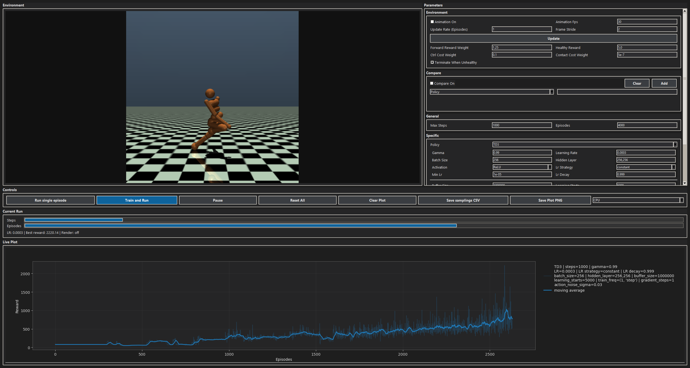
Fig. 2.1: Humanoid RL Workbench GUI overview.
The Environment panel is the render preview surface. It plays back collected episode frames and reflects animation toggles and playback pacing configured in the Parameters > Environment subpanel.
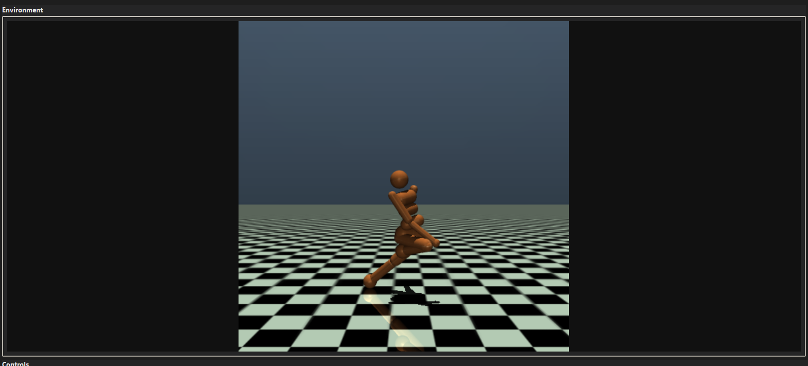
Fig. 2.2: Environment panel (render preview surface).
Area Description Preview Canvas Displays environment frames from episode playback. Render Source Frames collected during training/evaluation updates. Runtime Behavior Visibility and pacing are controlled through Parameters > Environment inputs.
The Parameters panel is a scrollable control surface with grouped subpanels. Each row uses a
label, input, label, inputstructure so values can be edited quickly while preserving readability.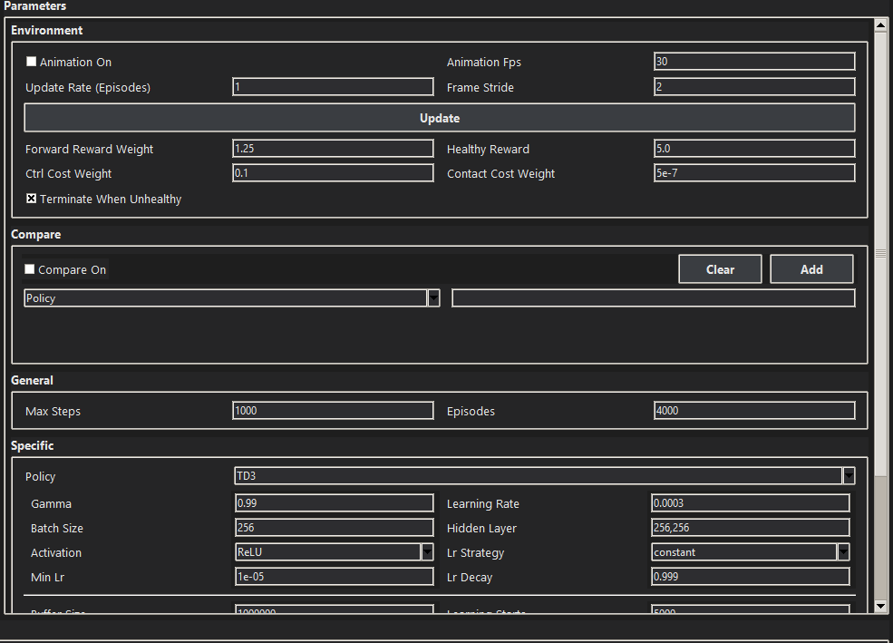
Fig. 2.3: Parameters panel with grouped control sections.
Subgroup Description Parameters > EnvironmentAnimation pacing and exposed environment arguments. Parameters > CompareCompare-mode sweep configuration. Parameters > GeneralEpisode and step limits for run horizon. Parameters > SpecificShared and policy-specific hyperparameters. Parameters > Live PlotReward smoothing and evaluation rollout plotting toggles.
The Parameters > Environment subpanel contains animation pacing controls and exposed environment arguments.
Updateapplies edited values to active trainers.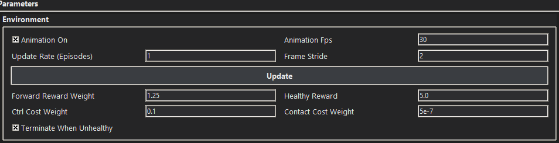
Fig. 2.4: Parameters > Environment subpanel.
Environment Animation Controls
Input / Toggle Type Default Description Animation OnToggle TrueEnables or disables frame playback in the environment preview panel. Animation FpsInput 30Target playback frame rate for rendered episode frames. Update Rate (Episodes)Input 1Number of episodes between visual/status updates. Lower values update more frequently. Frame StrideInput 2Keeps every N-th frame for playback to control speed and load. Environment Arguments
Input / Toggle Type Default Description Forward Reward WeightInput 1.25Scales the forward-velocity reward contribution from the environment. Healthy RewardInput 5.0Per-step survival reward while the humanoid remains healthy. Ctrl Cost WeightInput 0.1Weight of the action-magnitude penalty term. Contact Cost WeightInput 5e-7Weight of the external contact-force penalty term. Terminate When UnhealthyToggle TrueEnds an episode early when health conditions are violated.
The Parameters > Compare subpanel configures compare-mode sweeps.
Addinserts the current parameter/value entry into the compare set, whileClearremoves all queued compare entries.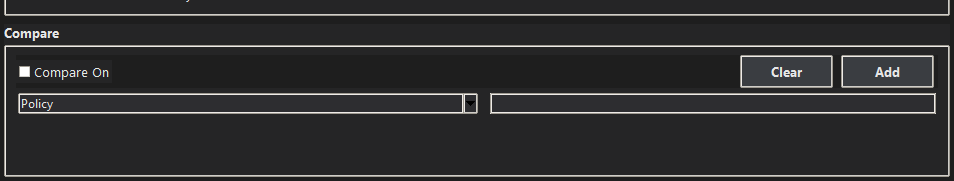
Fig. 2.5: Parameters > Compare subpanel.
Compare Controls
Input / Toggle Type Default Description Compare OnToggle FalseEnables Cartesian multi-run comparison across configured values. Compare ParameterInput PolicySelects which parameter dimension will be varied. Compare ValuesInput `` (empty) Comma-separated values used for compare expansion.
The Parameters > General subpanel controls run horizon inputs for both single and compare execution flows.
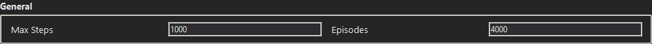
Fig. 2.6: Parameters > General subpanel.
General Run Limits
Input Type Default Description Max StepsInput 1000Maximum environment steps allowed per episode. EpisodesInput 4000Total number of episodes scheduled for a training run.
The Parameters > Specific subpanel defines policy-dependent hyperparameters. Policy-specific fields change with
Policy. Detailed meaning of policy-specific parameters is documented in section3.2.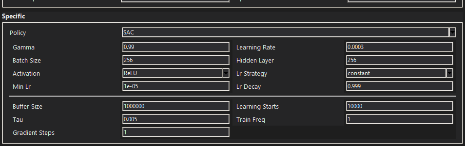
Fig. 2.7: Parameters > Specific subpanel.
Specific Hyperparameters
Input Scope Default (when Policy=SAC)Description PolicySelector SACChooses the active algorithm profile ( PPO,SAC,TD3).GammaShared 0.99Discount factor for future rewards. Learning RateShared 3e-4Base optimizer step size. Batch SizeShared 256Samples per gradient update. Hidden LayerShared 256,256Network hidden-layer width/architecture shorthand. ActivationShared ReLUActivation function used in policy/critic networks. Lr StrategyShared constantLearning-rate schedule mode ( constant,linear,exponential).Min LrShared 1e-5Lower bound used by decaying LR schedules. Lr DecayShared 0.999Exponential decay factor when exponential schedule is selected. Buffer SizeSAC-specific 1_000_000Replay buffer capacity for off-policy learning. Learning StartsSAC-specific 10_000Warm-up steps before gradient updates begin. TauSAC-specific 0.005Target-network soft-update interpolation factor. Train FreqSAC-specific 1Frequency of training triggers relative to environment steps. Gradient StepsSAC-specific 1Number of gradient updates per training trigger.
The Parameters > Live Plot subpanel controls reward visualization behavior.
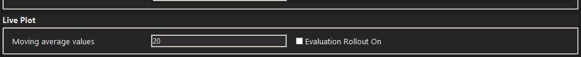
Fig. 2.8: Parameters > Live Plot subpanel.
Live Plot Controls
Input / Toggle Type Default Description Moving Average ValuesInput 20Window length used to smooth reward curves. Evaluation Rollout OnToggle FalseEnables plotting of periodic evaluation-rollout points.
The Controls panel executes run actions.
Run single episode,Train and Run, andPause/Runmanage execution state, whileReset All,Clear Plot,Save samplings CSV, andSave Plot PNGhandle reset/export operations.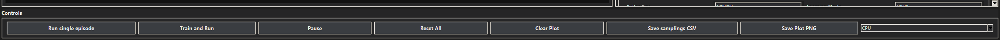
Fig. 2.9: Controls panel with execution and export actions.
Control Description Run single episodeExecutes one rollout with current settings. Train and RunStarts full training run using active configuration. Pause/RunToggles pause/resume for active workers. Reset AllStops workers and resets UI state. Clear PlotRemoves current plot traces from the session view. Save samplings CSVWrites collected samplings/transitions to CSV. Save Plot PNGExports live plot image to PNG. DeviceChooses execution target ( CPU/GPU).
The Current Run panel provides real-time progress bars for steps and episodes plus a compact status line with learning-rate and render state feedback.
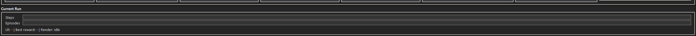
Fig. 2.10: Current Run panel with progress indicators.
Field Description StepsProgress within the active episode horizon. EpisodesProgress over total scheduled episodes. Status Line Current LR/render feedback and run-status summary.
The Live Plot panel overlays reward curves, moving averages, and optional evaluation rollout points. Legend interaction allows quick run visibility toggling during compare sessions.
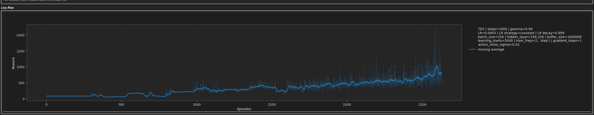
Fig. 2.11: Live Plot panel with rewards and moving averages.
Plot Element Description Reward Curve Per-episode raw reward trajectory. Moving Average Smoothed trend using configured window size. Evaluation Points Optional rollout markers when evaluation plotting is enabled. Interactive Legend Allows toggling visibility of individual run traces.
The project targets Gymnasium Humanoid-v5, a high-dimensional continuous-control MuJoCo environment.
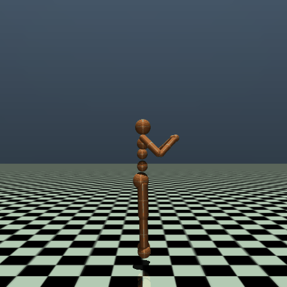

Fig. 3.1: Humanoid-v5 visual reference (workbench frame and Gymnasium reference image).
Description
Humanoid-v5 simulates a 3D bipedal robot with torso, legs, and arms. The task is to move forward quickly while staying upright and stable.
Action Space
The action space is Box(-0.4, 0.4, (17,), float32). Each action dimension applies torque to one hinge joint (abdomen, hips, knees, shoulders, elbows).
Observation Space
By default the observation space is Box(-inf, inf, (348,), float64). It combines kinematics and dynamics terms: qpos, qvel, cinert, cvel, qfrc_actuator, and cfrc_ext. If torso x/y are included (exclude_current_positions_from_observation=False), the size becomes (350,).
Rewards
The reward is healthy_reward + forward_reward - ctrl_cost - contact_cost. This encourages forward velocity and upright behavior while penalizing excessive control effort and large contact forces.
Starting State
The humanoid starts near an upright default pose and velocity, with small uniform reset noise controlled by reset_noise_scale (default 1e-2).
Episode End
An episode terminates early if the humanoid is unhealthy and terminate_when_unhealthy=True (default), typically when torso height leaves healthy_z_range=(1.0, 2.0). Episodes are truncated after 1000 steps.
Arguments
Official Gymnasium Humanoid-v5 arguments (environment API):
| Argument | Default | Meaning |
|---|---|---|
xml_file |
"humanoid.xml" |
MuJoCo model path. |
forward_reward_weight |
1.25 |
Weight of forward velocity reward. |
ctrl_cost_weight |
0.1 |
Weight of action magnitude penalty. |
contact_cost_weight |
5e-7 |
Weight of external contact-force penalty. |
contact_cost_range |
(-inf, 10.0) |
Clamp range used in contact cost. |
healthy_reward |
5.0 |
Per-step survival reward while healthy. |
terminate_when_unhealthy |
True |
If true, terminate when torso leaves healthy range. |
healthy_z_range |
(1.0, 2.0) |
Valid torso height interval for healthy state. |
reset_noise_scale |
1e-2 |
Scale of uniform noise added at reset. |
exclude_current_positions_from_observation |
True |
Excludes torso x/y from observation if true. |
include_cinert_in_observation |
True |
Include cinert terms in observation. |
include_cvel_in_observation |
True |
Include cvel terms in observation. |
include_qfrc_actuator_in_observation |
True |
Include actuator force terms in observation. |
include_cfrc_ext_in_observation |
True |
Include external force terms in observation. |
frame_skip |
5 |
Number of MuJoCo simulation steps per action. |
Environment controls exposed in this GUI (Parameters > Environment):
| GUI label | Backing argument | Default |
|---|---|---|
Forward Reward Weight |
forward_reward_weight |
1.25 |
Healthy Reward |
healthy_reward |
5.0 |
Ctrl Cost Weight |
ctrl_cost_weight |
0.1 |
Contact Cost Weight |
contact_cost_weight |
5e-7 |
Terminate When Unhealthy |
terminate_when_unhealthy |
True |
Reference: https://gymnasium.farama.org/environments/mujoco/humanoid/
The project compares three Stable-Baselines3 (SB3) methods for Humanoid-v5.
Practical ranking for this project: SAC first choice, PPO second, TD3 third.
This table summarizes why each method is used and its main strengths and trade-offs.
Method Why choose it Optimizer (and why) Pros Cons SAC(default)Strong default for difficult continuous control with entropy-regularized exploration. Adamfor actor/critics and entropy term; chosen for stable adaptive steps under noisy off-policy gradients.Strong final performance, robust exploration, sample-efficient. Higher compute/memory cost, some reward-scale sensitivity. PPOStable and reproducible baseline. Adam; chosen because clipped-objective policy gradients benefit from adaptive step sizes and robust convergence.Robust optimization, easy to debug and compare. Lower sample efficiency (on-policy), usually needs more interactions. TD3Strong off-policy deterministic alternative. Adamfor actor/critics; chosen for stable training with replay-buffer noise and delayed actor updates.Sample-efficient, high asymptotic potential with tuning. Weaker exploration than SAC, higher tuning sensitivity. Note: In this project, PPO training enforces
train_timesteps >= n_stepsper update cycle. This prevents stalled/weak PPO updates when an episode finishes with fewer steps than the rollout size.
This table lists all inputs that appear in the GUI
Specificgroup, ordered by field appearance (shared fields first, then policy-dependent fields).
Parameter (GUI label) SACPPOTD3Description PolicySACPPOTD3Active algorithm selector in the Specificgroup; changes the full training dynamics and stability/exploration profile.Gamma0.990.990.99Discount factor for future rewards; higher values favor long-term returns, lower values make learning more short-horizon. Learning Rate3e-43e-43e-4Optimizer step size; too high can destabilize updates, too low slows convergence. Batch Size25664256Number of samples per gradient update; larger batches reduce update noise but increase compute per update. Hidden Layer256,256256,256256,256Network width/architecture shorthand; larger models increase capacity but also training cost and overfitting risk. ActivationReLUReLUReLUActivation function for policy/value networks; affects gradient flow and representational behavior. Lr StrategyconstantconstantconstantLearning-rate schedule mode; decay strategies often improve late-stage stability versus constant LR. Min Lr1e-51e-51e-5Lower bound used by decaying LR schedules; prevents updates from becoming too small to learn. Lr Decay0.9990.9990.999Exponential decay factor for LR schedules; stronger decay stabilizes later training but can reduce adaptation speed. Buffer Size1_000_000-1_000_000Replay buffer capacity for off-policy learning; larger buffers increase sample diversity but may include older, less relevant data. Learning Starts5_000-5_000Warm-up interaction steps before updates begin; higher values improve initial data quality but delay learning onset. Tau0.005-0.005Target-network soft-update interpolation factor; lower values smooth targets more, higher values track new estimates faster. Train Freq1--Training trigger frequency (shown in GUI for SAC); controls how often gradient updates are launched from new data.Gradient Steps1--Number of gradient updates per training trigger (shown in GUI for SAC); increases sample efficiency but also computation time.N Steps-2048-PPO rollout length before each update; larger rollouts improve batch quality but reduce update frequency. Ent Coef-0.0-PPO entropy coefficient controlling exploration pressure; higher values encourage exploration, lower values favor exploitation. Policy Delay--2TD3 actor-update delay relative to critic updates; stabilizes actor learning by letting critics improve first. Target Policy Noise--0.2TD3 target-action smoothing noise; regularizes target Q-values and reduces overestimation spikes. Target Noise Clip--0.5Clip bound for TD3 target policy noise; limits smoothing magnitude to avoid unrealistic target perturbations. Action Noise Sigma--0.1TD3 action exploration noise scale (Gaussian sigma); higher sigma explores more but can slow policy refinement.
The following SB3-relevant defaults are active in this project but are not exposed in the GUI
Specificpanel.
Policy Hidden SB3 Parameter Default Why it matters SACent_coef"auto"Enables automatic entropy tuning, which strongly influences exploration pressure and training stability. SACuse_sdeTrueActivates state-dependent exploration noise; can improve exploration quality in continuous control. SACsde_sample_freq4Controls how often SDE noise is resampled, affecting exploration smoothness and variance. TD3train_freq(1, "step")Defines update trigger cadence; changing it shifts the interaction-to-update ratio. TD3gradient_steps1Number of optimization passes per training trigger; key sample-efficiency vs compute-time trade-off.
Setup
- Environment:
Humanoid-v5- Execution mode:
headless(no GUI loop, no animation rendering)- Device scope:
CPUandGPU- Episodes per run:
50- Max steps per episode:
256- Repeats per combination:
5Raw Runs and Summary
Policy Hidden Layers Device Repeat 1 Repeat 2 Repeat 3 Repeat 4 Repeat 5 Repeats used Mean elapsed [s] Std [s] PPO 256CPU 37.24 32.48 33.36 33.63 34.13 5/5 34.166 1.817 PPO 256GPU 90.18 78.80 74.68 72.57 73.49 5/5 77.944 7.241 PPO 256,256CPU 36.71 35.59 36.04 36.66 37.76 5/5 36.553 0.819 PPO 256,256GPU 76.95 73.77 74.35 75.50 79.19 5/5 75.953 2.180 SAC 256CPU 27.40 25.22 23.47 24.72 26.27 5/5 25.416 1.496 SAC 256GPU 44.85 44.80 44.98 42.00 42.18 5/5 43.761 1.528 SAC 256,256CPU 26.34 26.61 25.28 28.09 26.63 5/5 26.589 1.002 SAC 256,256GPU 38.45 42.86 43.76 41.85 43.18 5/5 42.019 2.112 TD3 256CPU 11.37 10.68 10.74 11.45 9.81 5/5 10.810 0.660 TD3 256GPU 12.43 12.22 12.89 13.29 11.61 5/5 12.488 0.644 TD3 256,256CPU 21.12 11.83 11.13 11.30 10.91 4/5 11.290 0.392 TD3 256,256GPU 12.10 11.68 11.66 11.54 11.74 5/5 11.744 0.212 Note:
TD3withhidden_layer=256,256onCPUhad an outlier at repeat 1 (21.12s). This value was discarded; mean/std and impact are computed from repeats 2-5.Analysis
Policy Hidden Impact CPU (256,256 vs 256) Hidden Impact GPU (256,256 vs 256) GPU Influence @256 (GPU vs CPU) GPU Influence @256,256 (GPU vs CPU) PPO +7.0% -2.6% +128.2% +107.8% SAC +4.6% -4.0% +72.2% +58.0% TD3 +4.4% -6.0% +15.5% +4.0% Short discussion: In this headless setup,
GPUis slower thanCPUfor all three policies at these benchmark scales, with the largest penalty onPPO, moderate onSAC, and smallest onTD3. Hidden-layer scaling is positive on CPU for all policies, while on GPU the256,256setting is slightly faster than256forPPO,SAC, andTD3.
This subsection compares SAC, TD3, and PPO training behavior in Humanoid-v5 using the three reference runs below. The focus is on how quickly each method enters the high-reward regime, how stable the learning process remains after that transition, and how strongly rewards fluctuate during late training.
Interpretation note: comparison is based on curve shape, transition behavior, and late-stage stability. Different max-episode settings are not used as the primary ranking criterion.
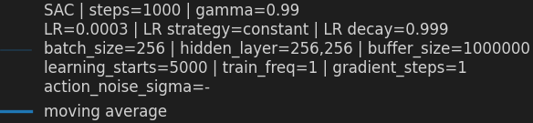
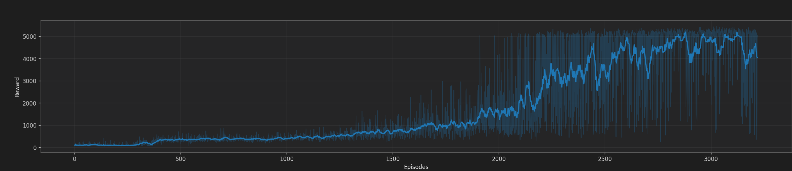
Fig. 4.1: SAC run used for method comparison.
Figure 4.1 analysis (SAC):
Figure 4.1 quick metrics (approximate, visual readout):
| Metric | Value (SAC, Fig. 4.1) | Interpretation |
|---|---|---|
| First sustained entry into high reward | ~episode 3100 |
Late transition into strong locomotion phase. |
| Best moving-average level | ~5000 |
Strong final asymptotic performance. |
| Late-phase variance (last ~20%) | High | Stability is weaker after convergence than desired. |
| Deep post-convergence drops | Frequent | Indicates noisy late-stage policy behavior. |
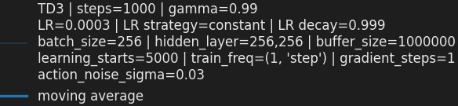
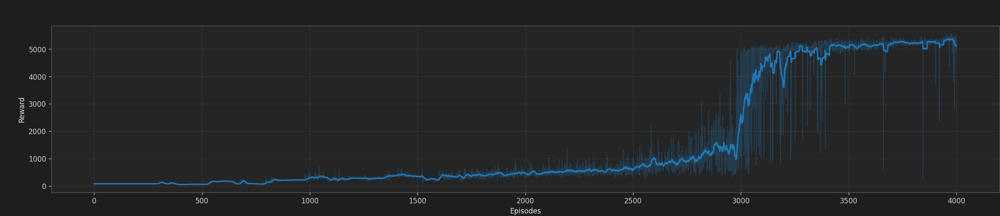
Fig. 4.2: TD3 run used for method comparison.
Figure 4.2 analysis (TD3):
Figure 4.2 quick metrics (approximate, visual readout):
| Metric | Value (TD3, Fig. 4.2) | Interpretation |
|---|---|---|
| First sustained entry into high reward | ~episode 3000 |
Slightly earlier and sharper transition than SAC. |
| Best moving-average level | ~5200 |
Very strong upper plateau quality. |
| Late-phase variance (last ~20%) | Medium | More stable than SAC in the final stage. |
| Deep post-convergence drops | Occasional | Better recovery profile and less persistent instability. |
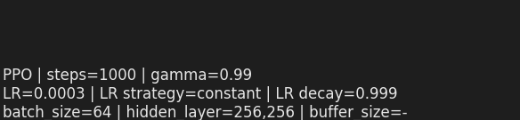
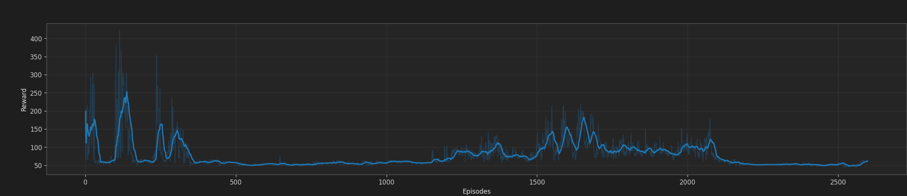
Fig. 4.3: PPO run used for method comparison.
Figure 4.3 analysis (PPO):
Figure 4.3 quick metrics (approximate, visual readout):
| Metric | Value (PPO, Fig. 4.3) | Interpretation |
|---|---|---|
| First sustained entry into high reward | Not observed | No durable transition into a high-reward regime in this run. |
| Best moving-average level | Low (visual) | Trend remains below SAC/TD3 method-comparison levels. |
| Late-phase variance (last ~20%) | Medium-High | Fluctuations persist without clear convergence. |
| Deep post-convergence drops | Not applicable | A true post-convergence phase is not reached. |
SAC and TD3 reach the high-reward regime, but transition and late-stage behavior differ. The SAC run shows stronger oscillations in the late stage and larger short-term reward swings after entering high-reward regions. The TD3 run (action_noise_sigma=0.03) shows a cleaner transition into the high-reward phase and a more stable upper plateau with fewer persistent regressions. In contrast, the PPO run in this comparison stays low and does not increase consistently toward a sustained high-reward regime; it is also shorter because PPO training was run with tighter computation-time/cost constraints.
From a parameter perspective, the three runs share many stabilizing defaults (gamma=0.99, learning_rate=3e-4, batch_size=256, hidden_layer=256,256, replay buffer scale in the same order), so the dominant behavioral differences are mainly explained by method-specific update dynamics:
SAC: stochastic policy optimization with entropy-driven exploration pressure. This often improves exploration robustness, but in this setup it also produces a noisier late-stage learning signal and more fluctuation near the performance ceiling.TD3: deterministic policy with delayed actor updates, clipped double critics, and target policy smoothing. With action_noise_sigma=0.03, exploration remains active but controlled, which appears to reduce late-stage instability and support steadier convergence.PPO: on-policy updates with clipped policy ratios and value-function coupling; in this specific run it does not achieve sustained high-reward behavior, and the shorter budget further limits evidence for late-stage consolidation.In this specific project setup, TD3 works better than SAC and PPO for the presented training runs. The practical reason is not only final reward level, but especially the more stable high-reward behavior once the policy has learned useful locomotion.
Convergence-reliability criterion used here: method selection prioritizes sustained high-reward stability and recovery behavior over isolated peak episodes.
Therefore, the next subsection uses TD3 as the baseline for parameter-focused comparison.
Based on the method comparison above, parameter sensitivity is analyzed with TD3.
For fine tuning in this workbench, parameters should be prioritized by expected impact on the stability-exploration trade-off and convergence quality:
action_noise_sigma (highest priority): directly controls exploration amplitude in deterministic TD3. It has immediate visible impact on reward variance, transition speed into high-reward behavior, and late-stage control smoothness.learning_rate: strongly influences optimizer stability and adaptation speed. If too high, instability and value overshoot increase; if too low, progress becomes slow and plateaus are reached late.policy_delay: controls how often actor updates are applied relative to critic updates. This is a key stabilizer in TD3 and often determines whether the actor tracks a reliable critic signal.target_policy_noise and target_noise_clip: shape target-action smoothing. These parameters control overestimation robustness and can reduce critic-driven oscillations when tuned consistently with exploration noise.gradient_steps (with effective update frequency): defines optimization intensity per interaction. This governs sample efficiency vs wall-clock cost and can amplify instability if update intensity is too high.batch_size: affects gradient variance and update smoothness. Larger batches typically stabilize updates but can reduce responsiveness and increase per-update compute.Practical tuning order for this project: first tune action_noise_sigma, then co-tune learning_rate and policy_delay, and only afterwards refine target_policy_noise/target_noise_clip, gradient_steps, and batch_size.
Parameter sensitivity ranking (for practical fine tuning):
| Parameter | Impact | Main risk direction | Recommended first search range |
|---|---|---|---|
action_noise_sigma |
High | Too high: oscillatory plateau. Too low: under-exploration. | 0.02 to 0.12 |
learning_rate |
High | Too high: unstable critics/actor. Too low: slow convergence. | 1e-4 to 5e-4 |
policy_delay |
High | Too low: actor chases noisy critic. Too high: slow adaptation. | 1 to 3 |
target_policy_noise |
Medium-High | Too high: over-smoothing. Too low: weaker regularization. | 0.1 to 0.3 |
target_noise_clip |
Medium | Too tight: weak smoothing. Too loose: noisy targets. | 0.3 to 0.7 |
gradient_steps |
Medium | Too high: compute-heavy and potentially unstable. | 1 to 4 |
batch_size |
Medium | Too small: noisy updates. Too large: slow adaptation. | 128 to 512 |
Recommended tuning protocol (reproducible):
3 random seeds per setting.The most relevant exposed TD3 parameter in this project is action_noise_sigma, because it directly controls exploration amplitude in a deterministic-policy algorithm:
action_noise_sigma can improve late-stage control smoothness and reduce policy jitter, but may under-explore if set too low.action_noise_sigma can improve early exploration coverage, but may slow stabilization and increase reward variance in later phases.In the observed runs, action_noise_sigma=0.03 provides a good balance between exploration and convergence stability. Relative to larger sigma settings, the training behavior is more consistent in the high-reward regime, which is the main reason it is selected as the practical default for follow-up experiments.
Additional TD3 parameters with high practical impact in this workbench are:
policy_delay: controls actor update frequency relative to critic updates; stronger delay generally improves stability but can slow policy adaptation.target_policy_noise and target_noise_clip: regulate target smoothing strength; too strong values can over-smooth updates, too weak values can increase value overestimation risk.gradient_steps and effective update frequency: higher update intensity can improve sample efficiency, but often increases wall-clock cost and sensitivity to noise.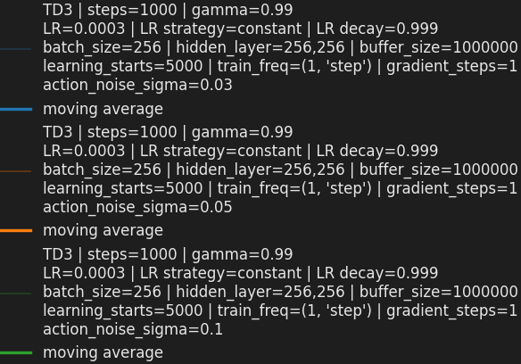
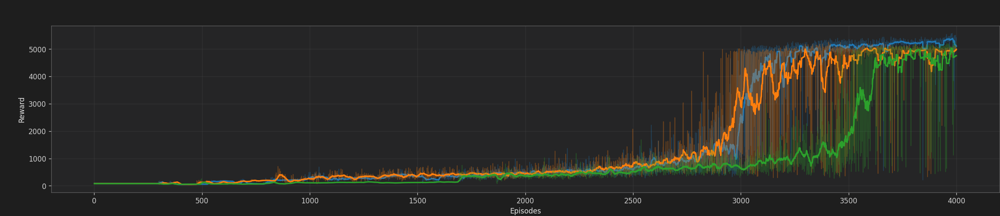
Fig. 4.4: TD3 parameter-comparison run.
Figure 4.4 analysis (TD3):
sigma=0.03, exploration is stronger and the reward trace shows broader short-term variance, especially around the transition to high rewards.sigma=0.03 run, indicating a higher exploration-induced disturbance level.Figure 4.4 quick metrics (approximate, visual readout):
| Metric | Value (TD3, Fig. 4.4) | Interpretation |
|---|---|---|
| First sustained entry into high reward | ~episode 3200 |
Transition occurs, but with higher variability. |
| Best moving-average level | ~5000 |
High ceiling is still reachable. |
| Late-phase variance (last ~20%) | Medium-High | Higher fluctuation than sigma=0.03. |
| Deep post-convergence drops | More frequent | Exploration noise disturbs late-stage refinement. |
Interpretation for fine tuning: sigma=0.1 is useful when additional exploration is needed, but for stable late-stage locomotion quality in this setup, sigma=0.03 remains the better operating point.
Failure-mode guide during tuning:
gradient_steps): higher compute load with possible instability amplification.Decision rule for selecting the best setting:
Next-step experiment matrix:
| Stage | Parameters varied | Candidate values | Purpose |
|---|---|---|---|
| A | action_noise_sigma |
0.02, 0.03, 0.05, 0.08, 0.10, 0.12 |
Lock exploration baseline. |
| B | learning_rate x policy_delay |
1e-4, 2e-4, 3e-4, 5e-4 x 1,2,3 |
Balance adaptation speed and stability. |
| C | target_policy_noise x target_noise_clip |
0.1,0.2,0.3 x 0.3,0.5,0.7 |
Improve critic target robustness. |
| D | gradient_steps x batch_size |
1,2,4 x 128,256,512 |
Optimize sample-efficiency vs stability/compute. |
Conclusion for parameter studies in this project: keep TD3 as the base method, start from action_noise_sigma=0.03, and vary one stability-critical parameter at a time to isolate effects on convergence speed, plateau quality, and variance.
The Humanoid RL Workbench is operational end-to-end: environment interaction, parameterized training control, live plotting, compare-oriented analysis workflow, and documentation of implementation and results are all in place. Method comparison indicates that both SAC and TD3 can reach high reward, but TD3 provides more reliable late-stage behavior in the presented runs. Parameter comparison suggests that exploration-noise control is the most impactful first tuning axis, with action_noise_sigma=0.03 as the strongest practical baseline in this setup.
Suggested next steps:
forward_reward_weight, ctrl_cost_weight, terminate_when_unhealthy) to check transfer of stability.| Figure | Description | Filename(s) used |
|---|---|---|
| Fig. 2.1 | Humanoid RL Workbench GUI overview | images/fig_2_1_gui_overview.png |
| Fig. 2.2 | Environment panel | images/fig_2_2_environment_panel.png |
| Fig. 2.3 | Parameters panel | images/fig_2_3_parameters_panel.png |
| Fig. 2.4 | Parameters > Environment | images/fig_2_4_params_environment.png |
| Fig. 2.5 | Parameters > Compare | images/fig_2_5_params_compare.png |
| Fig. 2.6 | Parameters > General | images/fig_2_6_params_general.png |
| Fig. 2.7 | Parameters > Specific | images/fig_2_7_params_specific.png |
| Fig. 2.8 | Parameters > Live Plot | images/fig_2_8_params_live_plot.png |
| Fig. 2.9 | Controls panel | images/fig_2_9_controls_panel.png |
| Fig. 2.10 | Current Run panel | images/fig_2_10_current_run_panel.png |
| Fig. 2.11 | Live Plot panel | images/fig_2_11_live_plot_panel.png |
| Fig. 3.1 | Humanoid-v5 visual reference | images/fig_3_1a_humanoid_workbench_frame.png; images/fig_3_1b_humanoid_gymnasium_ref.png |
| Fig. 4.1 | SAC run for method comparison | images/fig_4_1_legend_sac_run.png; images/fig_4_1_main_sac_run.png |
| Fig. 4.2 | TD3 run for method comparison | images/fig_4_2_legend_td3_method_run.png; images/fig_4_2_main_td3_method_run.png |
| Fig. 4.3 | PPO run for method comparison | images/fig_4_3_legend_ppo_method_run.png; images/fig_4_3_main_ppo_method_run.png |
| Fig. 4.4 | TD3 run for parameter comparison | images/fig_4_4_legend_td3_parameter_run.png; images/fig_4_4_main_td3_parameter_run.png |